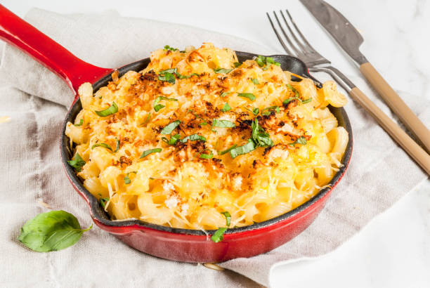

Welcome! Today I'll be telling you guys about my favorite meal.
There's a lot of foods I enjoy, but my top 3 have to be:
-
Lasgna
- Spaghetti
- Mac N' Cheese

Out of the 3, my favorite has to be Spaghetti.
Spaghetti is an extremely popular dish that originated from Italy.
Spaghetti consists of simple yet delicious ingredients!
In the big picture, spaghetti is just noodles, meat, and sauce. These are expandable to whatever you want!
The time to cook such a delicious meal is astounding!
If cooking the pasta and the meat simultaniously, it can be made in 10 minutes if working efficiently!
The steps to cooking spaghetti are simple!
Steps
- Use a large pot. ...
- Load up the pot with lots of water. ...
- Salt the water. ...
- Bring the water to a full, rolling boil. ...
- Stir to keep the pasta from sticking. ...
- Test the pasta two minutes before it's “ready” ...
- Save a scoop of pasta water. ...
- Drain, toss with sauce, and serve hot.
As for the rest, you can add whatever meat or other ingredient you'd like, and enjoy a fresh plate of spaghetti!